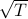
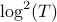

Decentralized Competing Bandits in Non-Stationary Matching Markets Avishek Ghosh, Abishek Sankararaman, Kannan Ramachandran, Arya Mazumdar, Tara Javidi IEEE Transactions on Information Theory, 2023
Online robust non-stationary estimation, Abishek Sankararaman, Balakrishnan (Murali) Narayanaswamy, NeurIPS 2023
Online heavy-tailed change point detection, Abishek Sankararaman, Balakrishnan (Murali) Narayanaswamy, UAI 2023
Double Auctions with Two-sided Bandit Feedback, Soumya Basu, Abishek Sankararaman, NeurIPS 2023
Model Selection for Generic Contextual Bandits Avishek Ghosh, Abishek Sankararaman and Kannan Ramachandran IEEE Transactions on Information Theory, 2023
FITNESS: (Fine Tune on New and Similar Samples) to detect anomalies in streams with drift and outliers, Abishek Sankararaman, Balakrishnan (Murali) Narayanaswamy, Vikramank Singh, Zhao Song ICML 2022 Slides
Breaking the  Barrier: Instance Independent Logarithmic Regret for Contextual Bandits, Avishek Ghosh, Abishek Sankararaman ICML 2022
Adaptive Clustering and Personalization in Multi-Agent Stochastic Linear Bandits Avishek Ghosh, Abishek Sankararaman (Joint First Authors) and Kannan Ramachandran ECML-PKDD 2022
Multi-Agent Low-Dimensional Linear Bandits Ronshee Chawla, Abishek Sankararaman and Sanjay Shakkottai IEEE Transactions on Automatic Control, 2022
Beyond  Regret for Decentralized Bandits in Matching Markets Soumya Basu, Karthik Abinav Sankararaman, Abishek Sankararaman ICML 2021
Dominate or Delete: Decentralized Competing Bandits in Serial Dictatorship Abishek Sankararaman, Soumya Basu (Joint First Authors) and Karthik Abinav Sankararaman AISTATS 2021
Problem-Complexity Adaptive Model Selection for Stochastic Linear Bandits Avishek Ghosh, Abishek Sankararaman and Kannan Ramachandran AISTATS 2021
Ergodicity and steady state analysis for Interference Queueing Networks Sayan Banerjee and Abishek Sankararaman (Authors ordered alphabetically by last name) AMS Contemporary Mathematics: Special volume in honor of M. M. Rao, 2021
The Gossiping Insert-Eliminate Algorithm for Multi-Agent Bandits Ronshee Chawla, Abishek Sankararaman, (Joint First Authors), Ayalvadi Ganesh and Sanjay Shakkottai AISTATS 2020 Slides
Social Learning in Multi Agent Multi Armed Bandits Abishek Sankararaman, Ayalvadi Ganesh, Sanjay Shakkottai ACM SIGMETRICS 2020 Slides Video
Community Detection on Euclidean Random Graphs Abishek Sankararaman, Emmanuel Abbe, François Baccelli Information and Inference : A journal of the Institute of Mathematics and Applications (IMA), 2020. Slides
Stability and Scalability of Blockchain Systems Aditya Gopalan, Abishek Sankararaman, Anwar Walid, Sriram Vishwanath ACM SIGMETRICS 2020 Video
ComHapDet: A Spatial Community Detection Algorithm for Haplotype Assembly Abishek Sankararaman, Haris Vikalo, François Baccelli BMC Genomics, 2020.
Interference Queueing Networks on Grids Abishek Sankararaman, François Baccelli, Sergey Foss Annals of Applied Probability, 2019, Vol 29, No. 5, 2929-2987 Slides
ComHapDet: A Spatial Community Detection Algorithm for Haplotype Assembly Abishek Sankararaman, Haris Vikalo, François Baccelli ACM CNB-MAC 2019 Slides
Community Detection on Euclidean Random Graphs Abishek Sankararaman, François Baccelli ACM-SIAM Symposium on Discrete Algorithms (SODA) 2018 Slides
Spatial Birth-Death Wireless Networks Abishek Sankararaman, François Baccelli IEEE Transactions on Information Theory, June 2017. Slides
Spatial Birth-Death Wireless Networks Abishek Sankararaman, François Baccelli Allerton 2016
Performance-Oriented Association in Large Cellular Networks with Technology Diversity Abishek Sankararaman, Jeong-woo Cho, François Baccelli International Teletraffic Congress (ITC), 2016 Slides
CSMA k-SIC : A Class of Distributed MAC Protocols and their Performance Evaluation Abishek Sankararaman, François Baccelli IEEE INFOCOM, 2015 Slides
Congestion Control of Smart Distribution Grids using State Estimation Abishek. S and Balakrishnan Narayanaswamy E6 Workshop, IEEE COMSNETS, Jan 2013